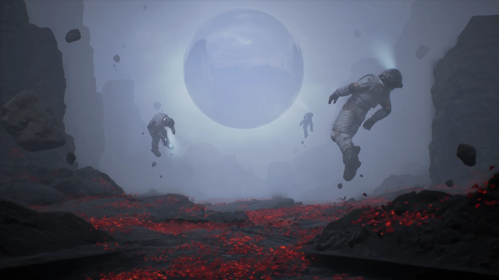
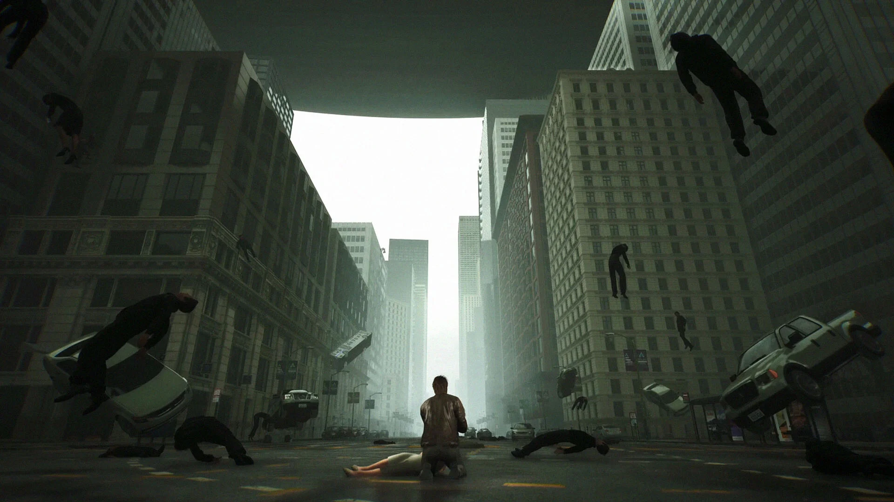
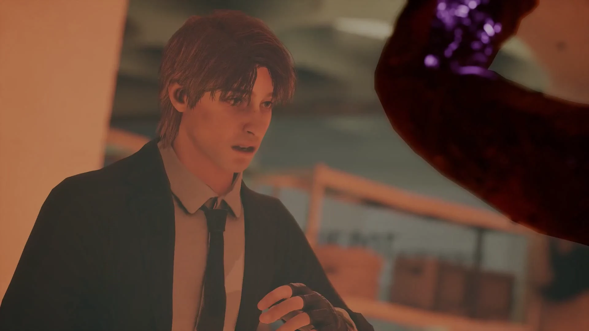
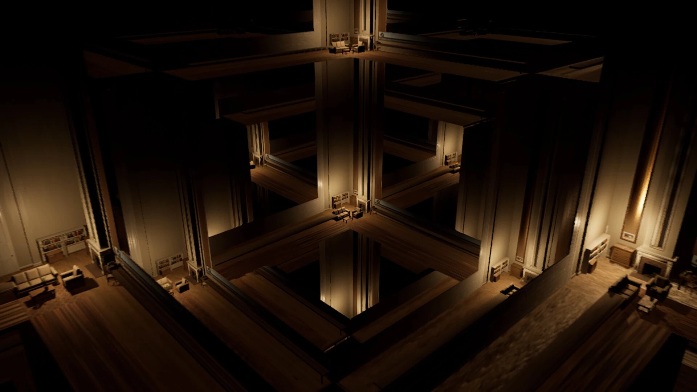
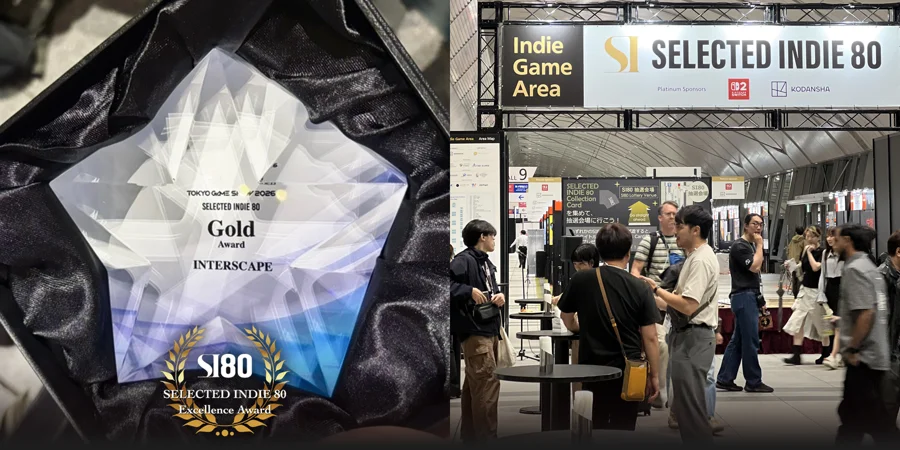
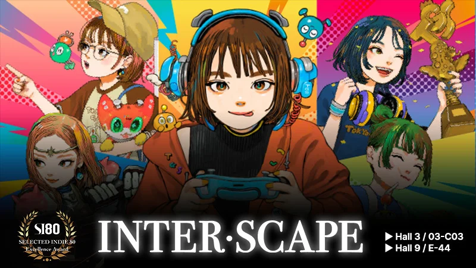
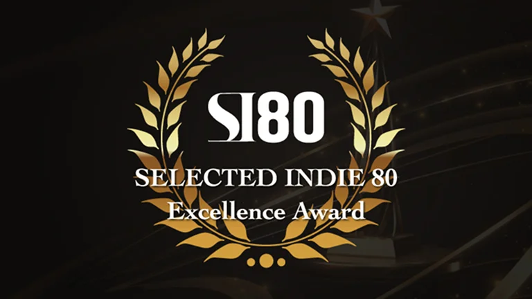
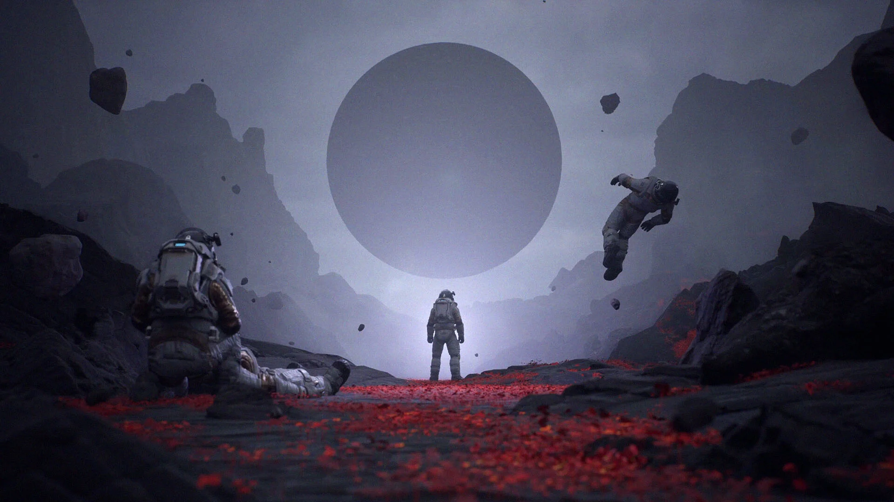

두 개의 꿈을 오가며
손가락을 튕기면 눈앞의 공간이 다른 꿈으로 바뀝니다. 두 꿈 사이를 넘나드는 능력을 이용해 탐험을 이어가세요.

A STORY ACTION ADVENTURE
A GAME BY ROOMTONE GAMES타인의 꿈에 들어갈 수 있는 요원 케이. 꿈과 현실의 경계를 넘나들며, 깨어나지 못하는 사람들을 구할 단서를 찾으세요.
01 THE STORY
블루닷이 만든 드림머신 ‘오라클’은 사람들이 원하는 꿈을 꾸게 해주었습니다. 하지만 하늘에 거대한 검은 구체가 나타난 뒤, 꿈은 빠져나올 수 없는 세계가 됩니다.


INTERSCAPE / AGENT K다이브 요원 케이
케이는 잠든 사람들을 깨울 방법을 찾아 꿈속으로 뛰어듭니다. 꿈의 주인이 달라질 때마다 풍경도, 그 안에서 할 수 있는 일도 달라집니다.
서로 뒤섞인 꿈을 탐험하고 검은 구체의 비밀을 따라가세요. 끝없는 잠에 빠진 인류를 구할 단서가 그 안에 있습니다.
02 GAMEPLAY
각 꿈은 그 주인의 무의식이 만든 독립된 세계입니다. 그 안에서 얻은 능력으로 퍼즐을 풀고, 위험을 지나 출구를 찾아가세요.
손동작에 맞춰 공간이 바뀌는 꿈 전환 플레이를 확인해보세요.
꿈속의 능력
손가락을 튕기면 눈앞의 공간이 다른 꿈으로 바뀝니다. 두 꿈 사이를 넘나드는 능력을 이용해 탐험을 이어가세요.
꿈속에서 시간의 흐름을 조작해 퍼즐에 도전합니다. 공간을 살피고 능력을 활용해, 쉽게 풀리지 않던 상황을 헤쳐 나가세요.
어떤 꿈에서는 사람이 아닌 존재로 변신합니다. 달라진 모습으로 꿈을 탐험하고, 숨겨진 진실의 조각을 찾아보세요.
03 INSIDE THE DREAMS
끝을 알 수 없는 건축물부터 흑백의 공간, 네온으로 빛나는 도시까지. 아름다운 풍경 속에도 위험과 악몽은 숨어 있습니다.

DREAMSCAPE
기둥과 통로가 거듭 이어지고, 익숙한 건축물은 낯선 미로가 됩니다. 뒤엉킨 꿈의 파편 사이에서 나아갈 길을 찾아가세요.
04 FILM & STILLS
케이의 여정과 꿈마다 달라지는 풍경, 실제 플레이를 공식 트레일러로 만나보세요.
05 FROM THE STUDIO

두 전시 부스에서 관람객을 만나고 Gold 트로피를 받은 개발팀은 다음 챕터 작업으로 돌아갔습니다.

새 챕터가 추가된 TGS 시연 버전과 한국관·SELECTED INDIE 80 두 부스의 전시 계획을 소개했습니다.

INTERSCAPE가 창의성과 완성도를 평가하는 TGS 2026 SELECTED INDIE 80 Excellence Awards에서 Gold 수상작으로 선정됐습니다.
06 GAME INFORMATION
INTERSCAPE는 ROOMTONE Games가 개발하는 싱글플레이 스토리 액션 어드벤처입니다.
현재 출시 예정이며, 정확한 출시일은 아직 공개되지 않았습니다. Steam 찜 목록에 추가하면 출시 알림을 받을 수 있습니다.
INTERSCAPE는 싱글플레이 게임입니다. 케이의 시점으로 이야기를 따라가며 혼자 꿈의 세계를 탐험합니다.
Steam 기준으로 한국어 인터페이스와 자막을 지원합니다. 음성은 영어로 제공되며, 전체 지원 언어는 Steam에서 확인할 수 있습니다.
PC(Windows)와 PlayStation 5로 출시 예정입니다. 각 플랫폼의 출시 정보는 Steam과 PlayStation 스토어에서 확인할 수 있습니다.
Steam에 공개된 사양입니다. 개발 중 변경될 수 있습니다.
